Posts


Top 5 Luxury L’OCCITANE Products in Saudi Arabia (With Exclusive Discount Code A162)
Read More
Building a Sharia‑Compliant Banking System with PostgreSQL: A Deep Dive into Modern Islamic Finance Engineering
Islamic finance is one of the fastest‑growing sectors in global banking — yet high‑quality, open‑source systems that …
Read More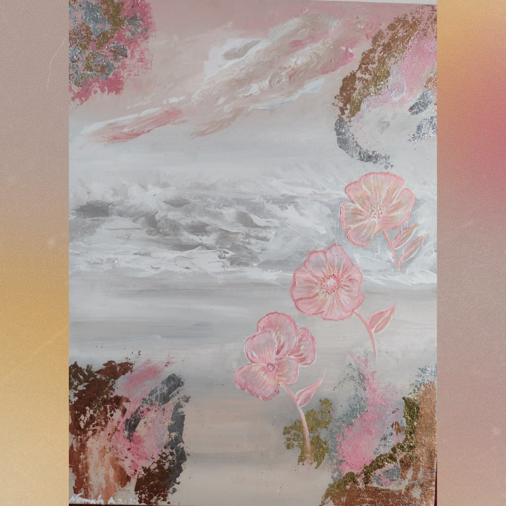
🌸 Metal Art Sheet Flower Abstract Landscape Painting – A Modern Statement Piece
A Fusion of Metal and Canvas
Art has always been about pushing boundaries, and this Metal Art Sheet Flower Abstract …
Read More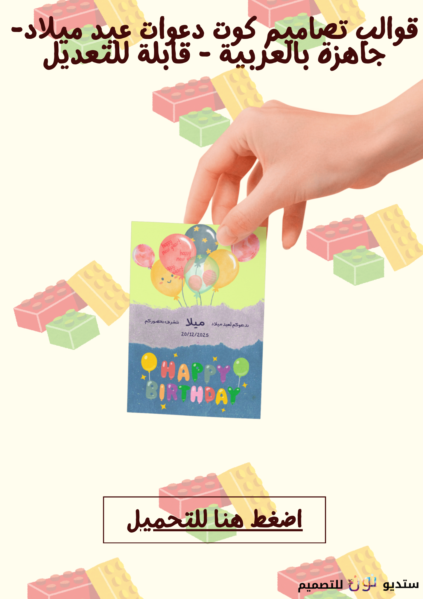
🎉 Celebrate in Style: Arabic Birthday Card Design Templates on Canva- Coupon Code Dec10 for 10% off whole store
✨ Why Choose Arabic Birthday Card Templates?
-
Cultural authenticity: Celebrate birthdays with designs that reflect …
🧾 Arabic Invoice Templates on Canva – Exclusive Etsy Listing.
Why Do You Need Arabic Invoice Templates?
-
Save time and effort: No need to design invoices from scratch. Get 10 …
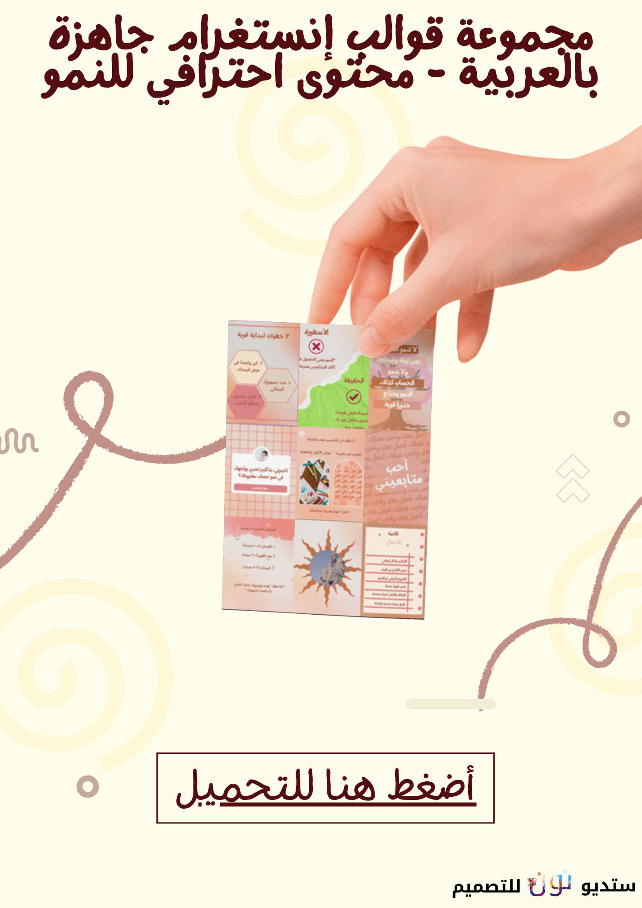
🎉 Grand Opening of NDesignStudyosu on Etsy – Your Destination for Arabic Digital Design Products
✨ Introduction
We are excited to announce the launch of our brand‑new Etsy store, NDesignStudyosu, where creativity …
Read More🌍 Nomad eSIM: The Ultimate Travel Connectivity Guide
Staying connected while traveling has never been easier. With Nomad eSIM, you can skip the hassle of physical SIM cards …
Read MoreNoon 11.11 Sale Extended! Grab These Top 10 Budget Phones with an Extra 15% Off
Your Ultimate Guide to Smartphone Savings
The biggest sale of the year isn’t over yet! Noon.com has extended its …
Read More🌹 The Way of the Heart & The Way of the Rubbles: NFTs That Speak for Palestine
In a world where digital art meets activism, two NFTs emerge not just as visual statements—but as emotional testaments …
Read More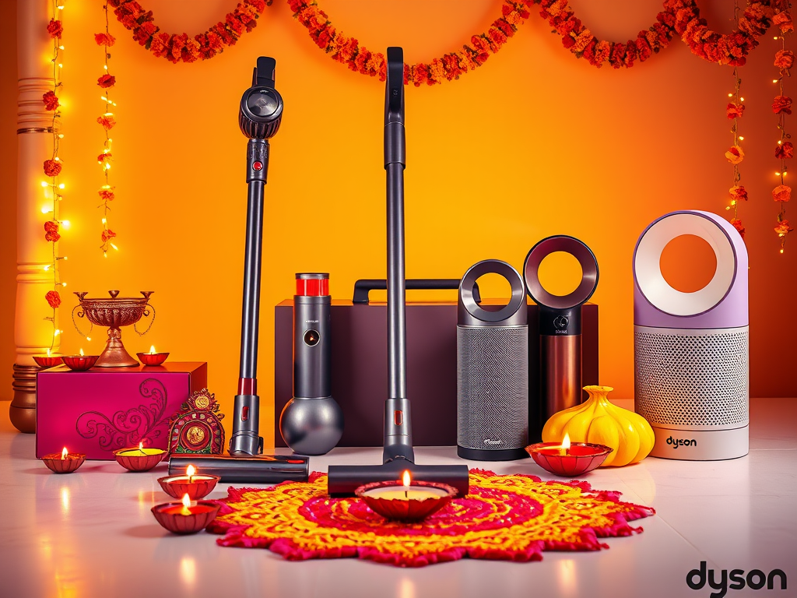
Celebrate Diwali with Dyson UAE: Exclusive Offers + Extra 5% Off with Code "FF"!
Dyson UAE is lighting up Diwali 2025 with dazzling discounts on its most innovative products—from powerful cordless …
Read More
🛍️ Why AliExpress Is a Shopper’s Paradise: Affordable Finds & Top-Selling Categories.
AliExpress has become a global go-to for savvy shoppers looking to score unbeatable deals on everything from tech …
Read More🌿 Transcending Death Through Art: Rumi’s “Any Soul That Drank the Nectar” Reimagined as NFT.
In a world saturated with fleeting visuals, true art whispers to the soul. Our latest NFT release, inspired by Mewlana …
Read More🌐 From Dreamer to Digital Creator: How SitesGPT Empowers Non-Techies to Build Stunning Websites.
✨ Meet Layla: The Dreamer Who Thought She Couldn’t Build a Website
Layla always had a vision. A small online shop …
Read More🌙 At The Twilight: A Soulful NFT Inspired by Rumi’s Mystical Verse.
✨ Introduction: Where Poetry Meets the Blockchain
In a world increasingly digitized, the soul still seeks meaning. …
Read More
🪞 "Mirror" as NFT: Truth, Reflection, and the Eye of a Digital Spirit.
In a world obsessed with filters and curated realities, the mirror remains one of the few objects that refuses to lie. …
Read More🔮 Breathing Digital Life into Rumi: My NFT Tribute to “Any Lifetime”.
In a world increasingly shaped by pixels and blockchain, I wanted to create something that transcends the digital — …
Read More🚀 What Is Lead Generation & The Best Free Tool to Supercharge Your Marketing.
In today’s hyper-competitive digital landscape, one challenge haunts every business owner, marketer, and sales …
Read More🚀 Most Popular AI Prompts That Boost Business Creativity in Marketing.
In today’s fast-paced digital landscape, creativity is the lifeblood of successful marketing. But even the most …
Read MoreThe Ultimate Guide to the Best Laptops in the Middle East (2025).
Welcome back to our blog, we took a time off to finish our studies. In this blog post we have prepared for you a …
Read More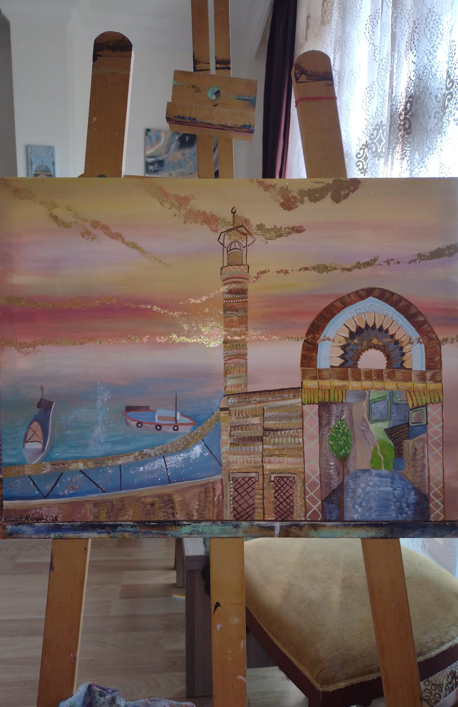
Latest Months artwork by nemah;
Hello to all my new followers of my blog, in this post I will share with you the latest paintings I have been working on …
Read More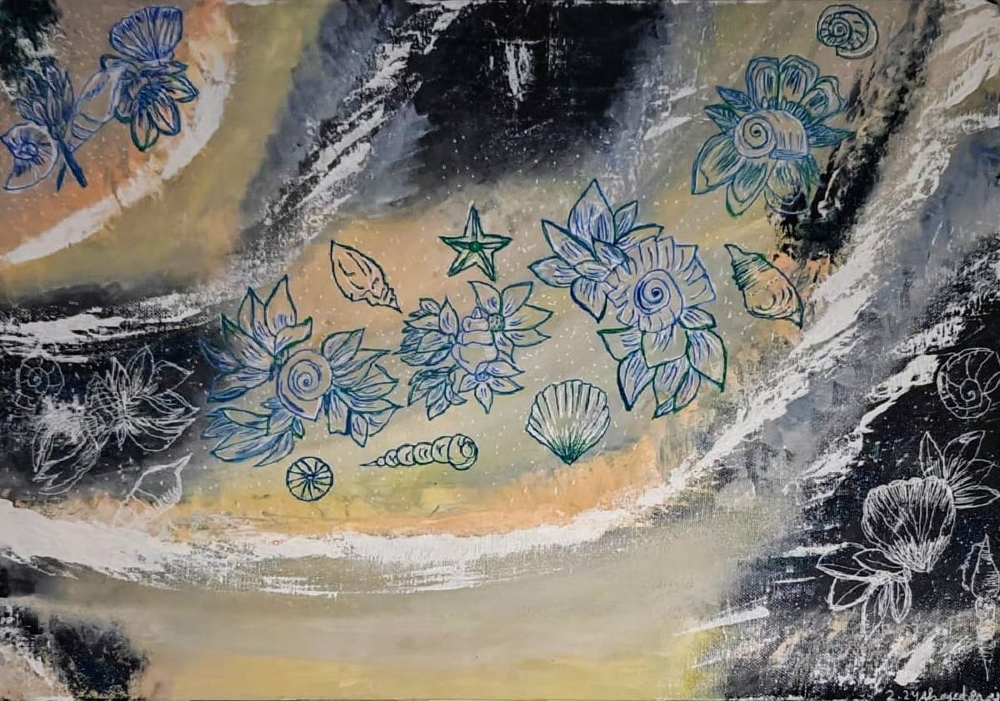
🌟 Discover Unique Treasures at My Dolap Mini Store! 🌟
Are you on the hunt for one-of-a-kind art, creative coloring books, stylish clothing, or high-quality cosmetics? Look no …
Read MoreDiscover timeless elegance: two exceptional rings inspired by history and prophecy, my artful journey through the historic district of European Istanbul.
In the name of God, the Most Gracious, the Most Merciful. We begin today’s article with a journey through the …
Read More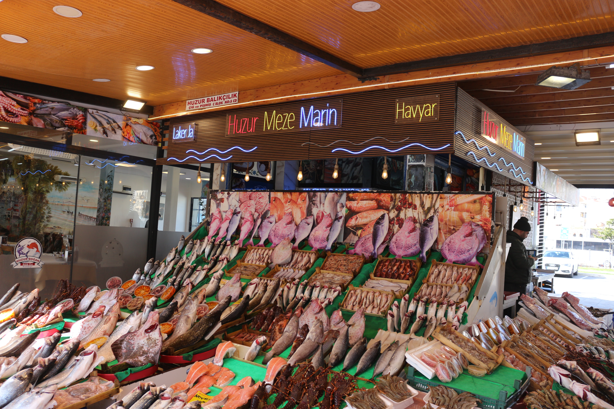
A Taste of Istanbul’s Maritime Heritage: My Kumkapı Balık Pazarı Adventure;
Nestled along the Marmara Sea in the heart of Istanbul, the Kumkapı Balık Pazarı (Kumkapı Fish Market) is more than just …
Read More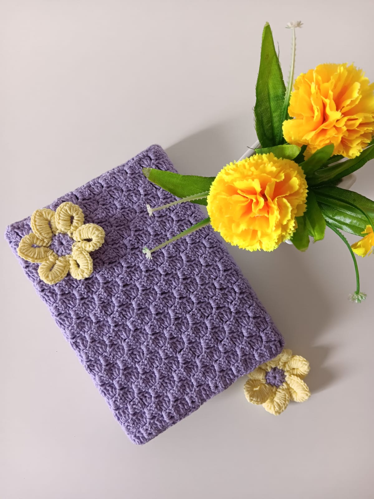
Discover the Timeless Art of Crochet with Wedad Kn.: A Journey Through History, Techniques, and Creativity.
Crochet is more than just a craft—it’s a timeless art form that weaves together history, culture, and creativity. If …
Read More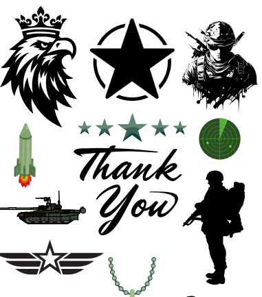
Order your custom stickers today.
This is Nemah of NDesignstudio the author of this blog: Here is my today’s message:
Elevate your brand, …
Read More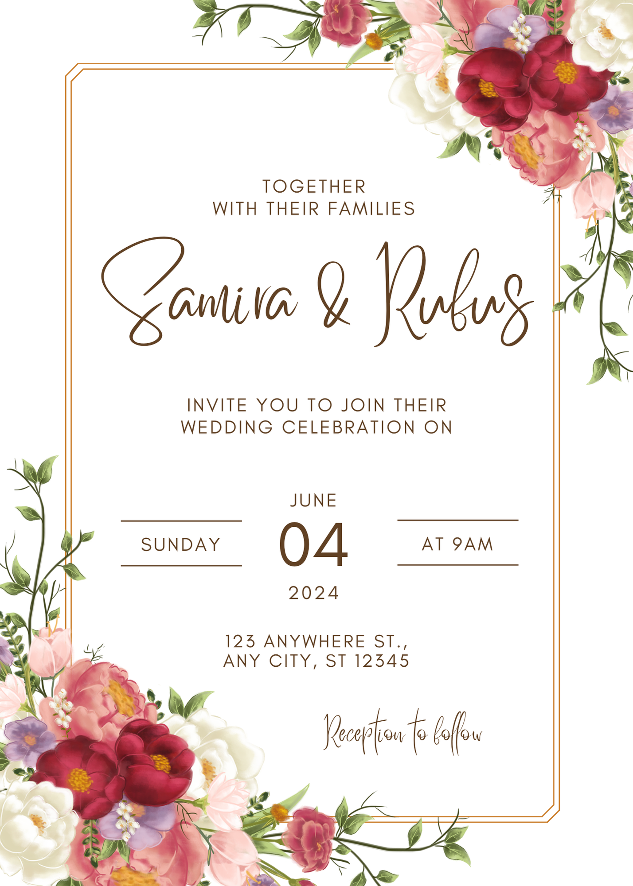
Unlock the Magic of Your Special Day with Nemah’s Custom Wedding Invites by NDesignstudio!
Your wedding day is a once-in-a-lifetime celebration, and every detail should reflect the love, joy, and uniqueness of …
Read More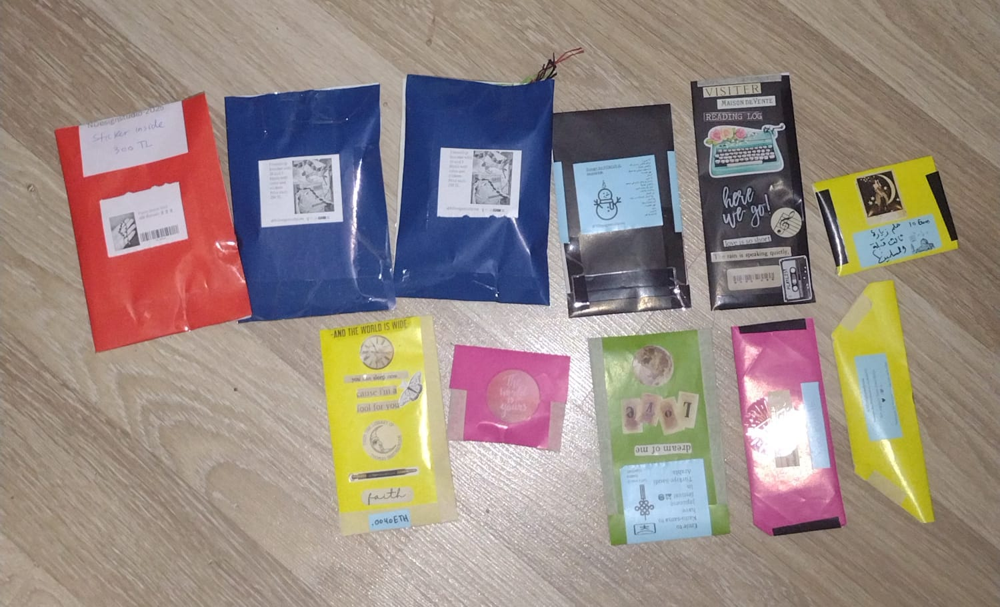
These Handmade Friendship Bracelets Are Taking Over Istanbul 2025!
In a world that often feels vast and disconnected, NDesignstudio brings people closer together—one bracelet at a time. …
Read MoreOctober Monthly Drawings Review.
In this post, we will review the drawings produced by NDesignstudio for the month of October.


مرحبا بكم بصفحة مدونة ستوديو نون باللغة العربية.
مرحبًا بكم في ستوديو نون للتصميم!
نحن هنا لنأخذكم في رحلة ملهمة إلى عالم التسويق بالعمولة بطريقة مبتكرة وسلسة. سواء كنت …
Read More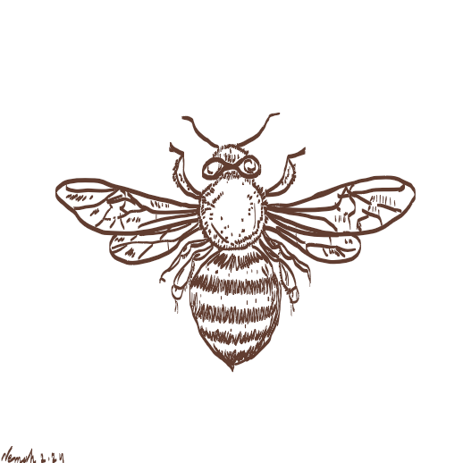
Review of NDesignStudio's Drawings of the Month of August.
In this article I will post the drawings I made in the month of august, created by the journalist app. Thank you for …
Read More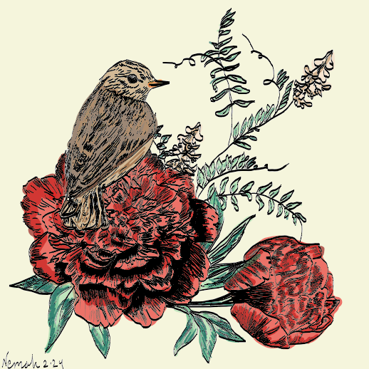
Exploring the Journalist App for Windows: A Comprehensive Review.
In the ever-evolving landscape of digital journalism, tools that streamline the writing, editing, and publishing process …
Read More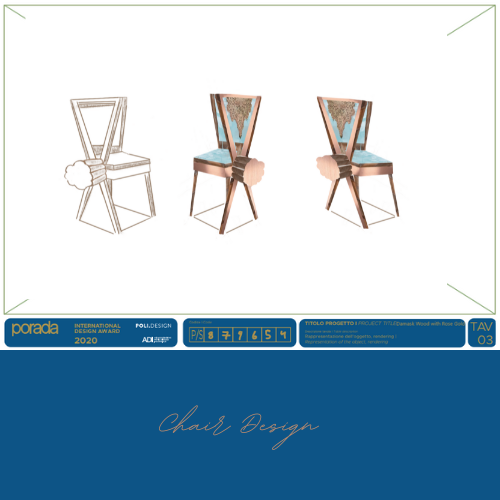
How to Create Design Brief for Design Project Made for Production;

In today’s post I will share with you how to create a design brief to participate in international competition …
Read More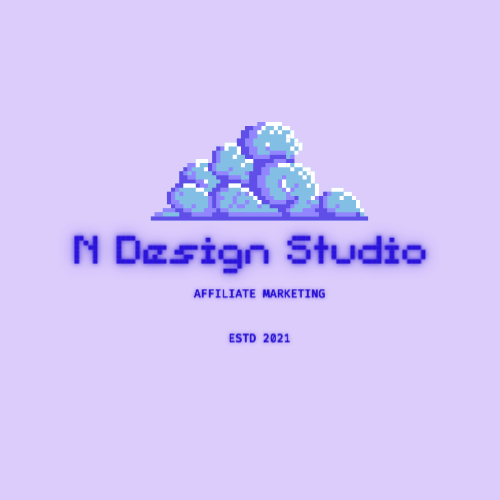
Welcome to N Design Studyosu;

At NDesignStudio & Affiliate Partners, we work with you to optimize your business from the top down. As an …
Read More